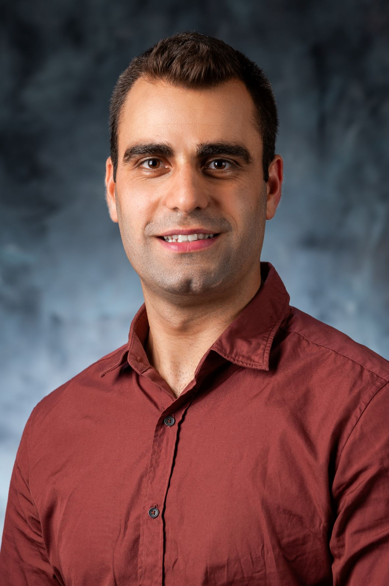

Sarkis Der Wartanian

PhD Student
Department of Statistics & Applied Probability
University of California, Santa Barbara
Santa Barbara, CA 93106, USA
Email: sarkisderwartanian@ucsb.edu
Check my CV here.
Educational Experience:
- Master's Degree in Statistics, Faculty of Sciences, Lebanese University
- Bachelor's Degree in Applied Mathematics with a concentration in Statistics, Faculty of Sciences, Lebanese University
Teaching Experience:
- Online tutoring for undergraduate and graduate students: Applied Statistics, Biostatistics, Algebra, and Calculus (2018 - 2021)
Work Experience:
Teaching Assistant at UCSB (Sept 2022 - present):
- Survival Analysis and its Applications on RStudio
- Introduction to Statistics and Python
Data Analyst at Wireless 20|20 (Aug 2021 - Oct 2022):
- Geospatial Analysis using QGIS and ArcGIS Pro
- Data Analysis using Python & SQL
- Prediction & forecasting of the future events
Research Interests:
- My research interest is mainly in data analysis, data science, statistical analysis, geospatial analysis, applied probability, modeling, and forecasting. I am currently
open to reasearch and internship opportunities in the relevant fields; please contact me!
Volunteer and Extracurricular Experience:
- Career Guidance Armenian Prelacy of Lebanon 2019-2020-2021 Guiding high school students in their decisions for future careers.